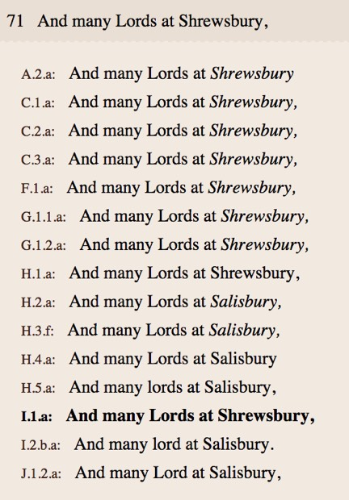
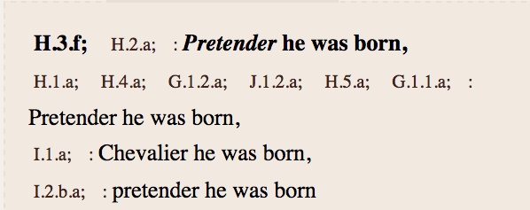
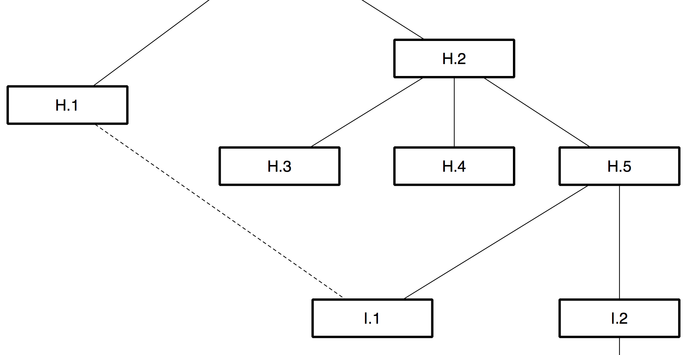

7. The ballad in the marketplace (2)
The major event in the regulation of the book trade in this period was the House of Lords' 1774 decision in Donaldson v. Beckett which ruled that there was no perpetual copyright under English common law and that the Act of 1710, through its system of time-limited copyrights, was the principal mechanism for governing the ownership of literary works.[1] This landmark decision, following decades of legal proceedings, pamphlet debates and trade agitation, theoretically allowed anyone to reprint the Chronicle and other traditional ballads, but it may also have diminished the market value of traditional ballads to the extent that only the most popular were worth keeping in print. Many ballads formerly published as broadsides were increasingly available in upmarket anthologies such as Percy's Reliques.[2] At the cheaper end of the market, the illustrated broadside was supplemented by new formats, including sheets bearing several songs; so-called 'slip songs' carrying shorter texts and fewer illustrations; garlands, chapbooks and other cheap codex formats; and cheap prints.[3] The dominant postion of the Dicey firm and its successors from the middle decades of the century may also have dissuaded competitive publication.[4]
Although few, the George III publications are some of the most interesting members of the tradition. The chapbook I.2 has no imprint, but as it appears to share woodcuts with the broadsides H.3 and H.6, printed by the Dicey firm at Bow Churchyard in London, it is almost certainly the eight-page 'merry patter' of 'The Wandering Jews Chronicle' listed for sale in a 1764 trade catalogue issued by that firm's successor from its later address at Aldermary Churchyard.[5] It can now be found in two significantly variant states: I.2.a exhibits numerous errors, in response to which the text of I.2.b has been reset and corrected, and a missing line supplied.[6] Regnal dates accompanying the woodcuts are unaltered settings, indicating that the two states were probably made and printed off close together in time. Due to the high cost of paper, both were probably issued for sale rather than being suppressed: I.2 is extant in more than one copy, therefore was not a proof.[7]
The order of the two I.2 states can in this case be determined, but a striking corollary finding is that even two states of an edition within a single-sheet format has the potential to complicate the work of the stemmatologist. A larger population of bibliographical variants within an edition composed, like most early printed books, of muliple combinations of corrected and uncorrected sheets would be virtually impossible to represent within an orthodox stemma.[8] This may provide an insight into the rationale behind the 'eclectic method' of editing developed in the twentieth century precisely to editorially manage typographic variations between editions of early printed texts.[9]
Whereas I.2 is of technical interest, I.1 is noteworthy for literary and historical reasons. Perhaps the most textually innovative member of the Chronicle tradition, I.1 is critically astute and sensitive to rhythm, sound and sense in a way that most other revisions, whether faithful or wayward in relation to their sources, are not. Its anonymous reviser was historically literate, as is shown by some of its emendations.

Fig. 21. Line 71 across the tradition.
While a mechanical textual analysis might see I.1's reading of 'Shrewsbury' rather than 'Salisbury' as further evidence of a descent from H.1, the revisionist editor of I.1 need not necessarily have had access to any other earlier text of the ballad: since the battle in question was historically fought at Shrewsbury and not Salisbury, a knowledge of any of numerous historical or literary sources (such as Shakespeare's Henry IV Part I) would have provided sufficient authority for the emendation. This shows the need for textual criticism to be informed by a knowledge of text 'outside' as well as 'inside' the tradition.
Whereas the Shrewsbury emendation restores, others overthrow. I.1 has been revised in several places to indicate Jacobite sympathies. For example, the 'Pretender' (earlier altered, it will be recalled, from 'The Prince of Wales'), has been replaced with 'Chevalier', a title for both James Stuart and his son Charles, used in many well-known Jacobite songs.[10]

Fig. 22. Pro- and anti-Jacobite descriptions of James Stuart, son of James II.
Evidently a counter to the earlier Whig appropriation of the Chronicle, these emendations, in an age of increasing toleration for Jacobitism in verse, might be interpreted as heartfelt, nostalgic or mischievous.[11] Textual collation is helpful for revealing the literary innovation and possible political sympathies of this edition, but a full appreciation of its liveliness in relation to some of its more mechanistic predecessors can come only from a sympathetic and outward-looking reading of the text as a whole.
Textual criticism is also only a negative guide to the historical sequence of the I editions: due to their very different endings, a direct relationship (and hence a sequence) is not indicated. The evidence instead points to each of the I edtions having descended from H.5. There is also strong evidence that I.1, while primarily descended from H.5, also took readings from H.1, as shown by the following stemma detail (the dotted line indicates a less influential relationship):

Fig. 23. Partial conflation of the texts of H.1 and H.5 in the text of I.1.
This phenomenon, in which multiple lines of descent converge on a single exemplar, is a subject of equally intense debate in textual scholarship and evolutionary biology. Known to biologists as lateral or horizontal transfer, it is sometimes known to textual scholars as contamination.[12] This essay will use the term conflation, which is more descriptive of the phenomenon at hand, and a less pejorative term for a mundane cultural process with which (for example) any traditional musician would be familiar. Conflation is a problem for orthodox textual criticism because it multiplies the number of possible pathways of descent while simultaneously reducing the set of unique variables that may indicate which pathways were actually taken. Trees turn into forests. Conflation occurs within oral, literate and other communications in ways that are specific to each medium, but particularly at the intersection of documentary traditions and oral cultures, where the printed ballad stands.[13] Its occurrence within the Chronicle tradition is not greatly significant on a technical level: its tendency to blur the pathways of descent is mitigated due to the clues provided by royal chronology and book trade history (as it also is in the case of the earlier conflation between A.2 and C.2 and C.3). The greater intensity of publication together with some cross-fertilisation between witnesses is of more interest from the perspective of cultural and intellectual history, linking as it does an insular English ballad to some of the widest-ranging debates of European Romanticism.
Romanticism (a retrospective term) was a phenomenon that sought to uncover, conceal, renew or reinvent the relationships between local and transnational traditions through linguistic research, historical narration, literary production and political activism. Although concerned with all forms of expression - including language as a whole - particularly energetic scholarly debate accompanied the collection and editing of texts. Those texts that appeared to have vernacular roots within a conjectured nation or ethnic population were of particular interest, but so too were those that appeared to have multiple, overlapping, overdetermined origins, similar to those that can be observed in conflated textual traditions. What constituted local or vernacular forms, as opposed to the transnational or the cosmopolitan, was precisely the issue at stake. This aspect of romantic-period scholarship followed older projects, including the reconstruction of biblical or ancient classical traditions such as the text of Homer, or the linguistic family tree of Europe and Asia. The fragmented nature of the cultural record drove scholarship ranging from reconstructive critical editions to collections of oral fragments, but also prompted poetic reimagination of the relationship between those fragments and their world. The emergence in the early nineteenth century of the stemma diagram was the literalisation of an older tendency to think in terms of family resemblances and lineages as the organising principle between fragments of all sorts.
More or less at the same time as the stemma emerged came a counter-argument: that the conflation of traditions was central to all cultural process. It was increasingly understood by editors that traditions, regardless of any ideological prioritisation of distinct lineages, in fact overlapped, or were co-authored, promiscuously revised, adapted and reused. This structural complexity was observable in comparative study and in close analysis of traditions themselves, including oral verse epics such as those of Homer; complex documentary traditions such as the Greek New Testament; and vernacular folk tales and ballads. The practical problem that conflation posed to editors of individual traditions led to larger, theoretical questions: was it ever possible to establish a line of descent that arranged variant branches within a single hierarchy? Which way up was the tree of tradition? Was it even a tree at all, or would it be better represented by some other structural figure? How distinct were traditions from each other? Did orality differ from writing? Was what was observed at a textual level an indication of larger linguistic or cultural structures? These debates, in which ballads, oral traditions and folktales have always been central, continue.[14]
Romanticism's reinvention of tradition was arguably related to the explosion of print afforded by the end of the ancien regime of perpetual copyright, at least in Britain as the nation's literary heritage - including 'old ballads' - became simultaneously usable and commercially almost valueless.[15] The Wandering Jew's Chronicle of old can hardly be said to be a product of Romanticism: nor was it a beneficiary of the Romantic rediscovery of ballads, as it was precisely at this time that the ballad's life in print came to an end.
[1] See Deazley, On the origin of the right to copy, (2004) and Rose, Authors and owners (1999).
[2] Thomas Percy, Reliques of ancient English poetry: consisting of old heroic ballads, songs, and other pieces of our earlier poets, (chiefly of the lyric kind.) Together with some few of later date, (Printed for J. Dodsley in Pall-Mall, 1765); Nick Groom, The making of Percy's 'Reliques', (Oxford University Press, 1999).
[3] Samuel Pepys noted as early as 1700 that ballads seemed to be carrying fewer illustrations from that date (Goldstein, p.288). See Shepard, Pitts, p.22 for the theory that chapbooks eclipsed broadsides; on the cheap prints trade, see Sheila O'Connell, The popular print in England, (British Museum Press, 1999).
[4] Stoker, 'Another look at the Dicey-Marshall publications, 1736-1806.'
[5] A Catalogue of Maps, Prints, Copybooks, Drawing-Books, Histories, Old Ballads, Patters, Collections &c., (Printed and sold by Cluer Dicey, and Richard Marshall, at the Printing-Office, in Aldermary Church-Yard, London. 1764) ESTCT162594. Glasgow University Library shelfmark Mu34-g.4, of which there is a transcription by R. C. Simmons at http://diceyandmarshall.bodleian.ox.ac.uk [accessed 19/11/2016].
[6] For example, line 35 in I.2.b'Gave him the poison as he drank' is missing entirely in I.2.a (this line and other corrections have been added in pen in the National Library of Scotland's copy (L.C.2733 (17), recorded as I.2.a.b. in the Bibliography in this edition.
[7] According to Philip Gaskell, paper formed majority of the production costs of printed books: 'often about 75 per cent of the total in the sixteenth century, dropping to about 50 percent by the eighteenth', A new introduction to bibliography, (Clarendon Press, 1972), 177, although these figures may overstate the costs for broadside ballads, which were generally printed on the cheapest papers.
[8] See e.g. Fredson Bowers - 'only rarely does any one copy of an early book contain all corrected or uncorrected formes', in 'The problem of the variant forme in a facsimile edition', The Library 5:4, (1952), 262-272, 262.
[9] The classic formulation of the eclectic method is given in W.W. Greg, 'The rationale of copy-text', Studies in Bibliography, 3, (1951), 19-37. See also Fredson Bowers, 'Remarks on eclectic texts', Proof, 4, (1975), 13-58.
[10] See the ballad 'The Battle of Preston' (Donaldson, p.26) in respect of James Stuart (who was entitled the Chevalier de Saint George); or the well-known ballad of the 1745 rebellion Charly is My Darling, http://www.fresnostate.edu/folklore/ballads/FSWB140A.html[accessed 15/11/2014].
[11] A work like James Hogg's Jacobite relics of Scotland, published by the mainstream Edinburgh firm of Blackwoods in 1819, was not considered subversive by that time.
[12] W. Ford Doolittle, 'Phylogenetic classification and the universal tree', Science, 284:5423, 25 June 1999, 2124-2128; Carl R. Woese, 'Interpreting the universal phylogenetic tree', Proceedings of the National Academy of Sciences of the United States of America, 97:15, (2000); 8392-8396; William Robins, 'Editing and evolution', Literature compass, 4:1, (2007), 89-120; David Greetham, The pleasures of contamination: evidence, text, and voice in textual studies, (Indiana University Press, 2010).
[13] Street ballads in nineteenth-century Britain, Ireland, and North America: The interface between print and oral cultures , edited by David Atkinson and Steve Roud, (Ashgate: 2014); Adam Fox, Oral and literate culture in England 1500-1700, (Oxford University Press, 2000); D. R. Woolf, 'The "Common Voice": history, folklore and oral tradition in early-modern England', Past and Present, 120, (1998), 26-52; David Atkinson, 'The Ballad Revival and National Literature: Textual Authority and the Invention of Tradition', in David Hopkin and Tim Baycroft (eds.), Folklore and nationalism in Europe during the long nineteenth century, (Brill, 2012), 275-300. For another account of a single ballad tradition across various media and formats, including the printed broadside, see Robert S. Thomson, 'The Frightful Foggy Dew', Folk Music Journal, 4.1 (1980), 35- 61.
[14] Tom Cheesman and Sigrid Rieuwerts argue that 'The modern study of culture begins with the study of ballads. The eighteenth-century "discovery" of ballads in popular tradition (that is, the putting of ballads into scholarly books) began an enduring debate which was crucial in defining what came to be called Romanticism. All modern theories of culture and poetics trace their ancestry to this debate': Preface, Ballads into books: the legacies of Francis James Child, edited by Tom Cheesman and Sigrid Rieuwerts, selected papers from the 26th International Ballad Conference (SIEF Ballad Commission), Swansea, Wales, 19-24 July 1996, (Peter Lang, 1997), 5. David Atkinson provides a valuable overview of the history and politics of ballad editing in his 'The ballad revival and national literature.' See also Nigel Leask and Philip Connell, 'Introduction: what is the people?' in Leask and Connell (eds.), Romanticism and popular culture in Britain and Ireland, (Cambridge University Press, 2009) 3-48; Maureen McLane, 'Mediating antiquarians in Britain, 1760-1830: The invention of oral tradition, or, close reading before Coleridge', in This is Enlightenment, edited by Clifford Siskin and William Warner (University of Chicago Press, 2010), 247-264; Susan Manning, 'Antiquarianism, balladry, and the rehabilitation of romance', in The Cambridge History of English Romantic Literature, edited by James Chandler (Cambridge University Press, 2008), 45-70; E. David Gregory, Victorian songhunters: the recovery and editing of English vernacular ballads and folk lyrics, 1820-1883, (Scarecrow Press, 2006); Peter Burke, Popular culture in early modern Europe, 3rd edition, (Ashgate, 2009); Giuseppe Cocchiara, The history of folklore in Europe, translated by John McDaniel, (Philadelphia: Institute for the Study of Human Issues, 1981); Anthony Grafton, 'Prolegomena to Friedrich August Wolf', Journal of the Warburg and Courtauld Institutes, 44, (1981), 101-129; Dirk van Hulle and Joep Leerssen (eds.), Editing the nation's memory: textual scholarship and nation-building in nineteenth-century Europe, (Rodopi, 2008); and John Miles Foley, 'Folk literature', in Scholarly editing: a guide to research, edited by David Greetham, (Modern Language Association, 1995), 600-626.
[15] This is the argument of St. Clair's Reading Nation: however, many ballads, like the Chronicle, were competitively reprinted before Donaldson v. Beckett. St. Clair's reasoning that ballad anthologies, such as the 1723-5 Collection of Old Ballads and (initially) Percy's 1765 Reliques, constituted copyright claims is without any apparent foundation.